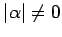
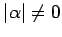

Inhalt Index DeskTop Bronstein

 Dynamische Systeme und Chaos Bifurkationstheorie, Wege zum Chaos Bifurkationen in Morse-Smale-Systemen Globale Bifurkationen
Dynamische Systeme und Chaos Bifurkationstheorie, Wege zum Chaos Bifurkationen in Morse-Smale-Systemen Globale Bifurkationen


| Beispiel |
|
Gegeben sei die parameterabhängige ebene Differentialgleichung |
Für  hat (17.38) die beiden Sättel (0,1) und (0,-1) und die y-Achse als invariante Menge. Teil dieser invarianten Menge ist der heterokline Orbit. Für kleine  bleiben die Sattelpunkte erhalten, während der heterokline Orbit zerfällt (s. Abbildung).
hat (17.38) die beiden Sättel (0,1) und (0,-1) und die y-Achse als invariante Menge. Teil dieser invarianten Menge ist der heterokline Orbit. Für kleine  bleiben die Sattelpunkte erhalten, während der heterokline Orbit zerfällt (s. Abbildung).